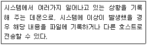
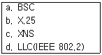

인터넷보안전문가-2급 (2010-10-03 기출문제)
1과목: 정보보호개론
1. DES(Data Encryption Standard)에 대한 설명 중 옳지 않은 것은?
- 1970년대 초 IBM이 개발한 알고리즘이다.
- 2048 비트까지의 가변 키 크기가 지원되고 있다.
- NIST + NSA가 개발에 참여했다.
- 암호화 방식의 전자 코드 북과 암호 피드백으로 이루어졌다.
(정답률: 71%)

2. 시스템관리자가 사용자의 인증을 위한 사용자 ID 발급 시에 주의할 점으로 옳지 않은 것은?
- 시스템에 의해 식별 될 수 있는 유일한 사용자 ID를 발급해야 한다.
- 사용자 ID와 패스워드의 두 단계 인증을 하는 ID를 발급해야 한다.
- 일정기간 후에는 개별 사용자의 의지와는 관계 없이 사용자 ID를 변경함을 제시한다.
- 시스템에 허용되는 접근의 종류는 반드시 제시하고 제한한다.
(정답률: 73%)
3. 우리나라에서 개발된 표준 암호 알고리즘으로 구성된 것은?
- 암호 : SEED, 해쉬 : HAS-160, 서명 : KCDSA
- 암호 : DES, 해쉬 : HAS-160, 서명 : DSS
- 암호 : SEED, 해쉬 : MD-5, 서명 : RSA
- 암호 : IDEA, 해쉬 : HAS-160, 서명 : DSS
(정답률: 84%)
4. 암호 알고리즘 중 송, 수신자가 동일한 키에 의해 암호화 및 복호화 과정을 수행하는 암호 알고리즘은?
- 대칭키 암호 알고리즘
- 공개키 암호 알고리즘
- 이중키 암호 알고리즘
- 해시 암호 알고리즘
(정답률: 86%)
5. 보안의 4대 요소로 옳지 않은 것은?
- 기밀성
- 무결성
- 확장성
- 인증성
(정답률: 84%)
6. 암호화 메커니즘에 의한 설명 중 옳지 않은 것은?
- 문서구조 : PKCS.7, PEM 또는 PGP
- 서명 알고리즘 : RSA 또는 DSA
- 문서 축약 알고리즘 : MD2, MD5 또는 SHA
- 제한 모드 : RSA, In-band, Out-band, D-H Kerberos
(정답률: 60%)
7. 패킷 필터링의 단점으로 옳지 않은 것은?
- 현재의 필터링 도구는 모든 패킷에 대해 완벽한 필터링을 하지 못한다.
- NFS와 같은 일부 프로토콜은 패킷 필터링에 어울리지 않는다.
- 필터링은 클라이언트 컴퓨터에 대한 특정한 환경설정이나 사용자에 대한 훈련이 요구되지 않는다.
- 패킷 필터링이 실패하면 거부되어야 하는 패킷을 통과시키는 경우가 많다.
(정답률: 74%)
8. 전자 서명문 생성 시에 이용되는 인증서에 대한 설명으로 옳지 않은 것은?
- 인증기관이 한번 발행하면 영원히 취소되지 않는다.
- 근본적으로 사용자의 이름과 공개키를 인증기관의 개인키로 서명한 서명문이다.
- 주체 이름은 일반적으로 X.500 DN(Distinguished Name)형식을 갖는다.
- 주체 이름을 대신하는 주체 대체 이름으로 사용자ID, E-mail 주소 및 IP Address, DNS이름 등을 사용한다.
(정답률: 79%)
9. 네트워크 또는 응용을 위한 보안 대책으로 옳지 않은 것은?
- SSL - 종단간 보안
- PGP - 안전한 전자메일
- Single Sign On - 무선 링크 보안
- Kerboros - 사용자 인증
(정답률: 63%)
10. 이산대수 문제에 바탕을 둔 대칭형 암호 알고리즘을 위한 공개키 방식의 키 분배 알고리즘은?(오류 신고가 접수된 문제입니다. 반드시 정답과 해설을 확인하시기 바랍니다.)
- RSA 알고리즘
- DSA 알고리즘
- MD-5 해쉬 알고리즘
- Diffie-Hellman 알고리즘
(정답률: 47%)
2과목: 운영체제
11. 어떤 서브넷의 라우터 역할을 하고 있는 Linux 시스템에서 현재 활성화 되어있는 IP Forwarding 기능을 시스템 리부팅 없이 비활성화 시키려 한다. 올바른 명령어는? (이 시스템의 커널버전은 2.2 이다.)
- echo "1" > /proc/sys/net/ipv4/ip_forward
- echo "0" > /proc/sys/net/ipv4/ip_forward
- echo "1" > /proc/sys/net/conf/ip_forward
- echo "0" > /proc/sys/net/conf/ip_forward
(정답률: 44%)
12. Linux에서 사용하는 에디터 프로그램으로 옳지 않은 것은?
- awk
- pico
- vi
- emacs
(정답률: 73%)
13. 30GB의 하드디스크를 모두 Linux 파티션으로 사용하고자 한다. RedHat 6.0을 설치하던 중 Disk Druid에서 30GB를 “/(root)” 파티션으로 생성하려 하였으나 실패하였다. 해결방법은?
- 1024 실린더 내에 “/boot“ 파티션을 생성하고 나머지를 “/“ 로 파티션 한다.
- 1024 실린더 내에 “/kernel“ 파티션을 생성하고 나머지를 “/“ 로 파티션 한다.
- 1024 실린더 내에 “/etc“ 를 파티션하고 나머지를 “/“ 로 파티션 한다.
- 1024 실린더 내에 “/home“ 을 파티션하고 나머지를 “/“ 로 파티션 한다.
(정답률: 40%)
14. Linux 시스템을 곧바로 재시작 하는 명령으로 옳지 않은 것은?
- shutdown -r now
- shutdown -r 0
- halt
- reboot
(정답률: 88%)
15. 아파치 웹서버는 access.conf를 사용하여 외부접근 제어를 한다. 각 설정에 대한 설명으로 옳지 않은 것은?
- order deny, allow
allow from linux1.nycom.net
deny from all
linux1.nycom.net부터의 연결 요구만을 허락한다. - order deny, allow
allow from linux1.mydom.net linux2.mydom.net linux3.mydom.net
deny from all
linux1.mydom.net, linux2.mydom.net, linux3.mydom.net부터의 연결 요구만을 허락한다. - order deny, allow
allow from all
deny from hackers.annoying.net
hackers.annoying.net부터의 연결 요구만을 거절한다. - order mutual-failure
allow from foobirds.org
deny from linux1.foobirds.org linux2.foobirds.org
foobirds.org에 있는 모든 호스트로부터의 연결 요구만을 허락한다.
(정답률: 78%)
16. “/etc/resolv.conf” 파일에 적는 내용이 알맞게 나열된 것은?
- 네임서버 주소, DNS 서버 IP Address
- 네임서버 주소, Linux 서버 랜 카드 IP Address
- 네임서버 주소, 홈페이지 도메인
- 네임서버 주소, 서버 도메인
(정답률: 65%)
17. Linux에서 네트워크 계층과 관련된 상태를 점검하기 위한 명령어와 유형이 다른 것은?
- ping
- traceroute
- netstat
- nslookup
(정답률: 80%)
18. Wu-FTP 서버로 FTP 서버를 운영하고 있는 시스템에서 파일의 송수신 기록이 저장되는 파일은?
- /var/log/access-log
- /var/log/xferlog
- /var/log/wtmp
- /var/log/message
(정답률: 48%)
19. Linux 시스템에서 다음의 역할을 수행하는 데몬은?

- inet
- xntpd
- syslogd
- auth
(정답률: 85%)
20. NFS 서버에서 Export 된 디렉터리들을 클라이언트에서 알아보기 위해 사용하는 명령은?
- mount
- showexports
- showmount
- export
(정답률: 65%)
21. Linux MySQL 서버를 MySQL 클라이언트 프로그램으로 연결하였다. 새 사용자를 등록하려 하는데, 등록해야하는 데이터베이스이름, 테이블이름, 등록 시 사용하는 쿼리가 알맞게 나열된 것은?
- mysql ,user, insert
- mysql, host, insert
- sql, user, update
- sql, host, update
(정답률: 76%)
22. Linux 시스템에서 현재 구동 되고 있는 특정 프로세스를 종료하는 명령어는?
- halt
- kill
- cut
- grep
(정답률: 88%)
23. 인터넷에서 도메인 이름을 IP Address로 변환하여 주는 서버는?
- NT서버
- DNS서버
- 웹서버
- 파일서버
(정답률: 80%)
24. 기존의 지정된 PATH 의 맨 마지막에 “/usr/local/bin” 이라는 경로를 추가하고자 한다. 올바르게 사용된 명령은?
- $PATH=$PATH:/usr/local/bin
- PATH=$PATH:/usr/local/bin
- PATH=PATH:/usr/local/bin
- PATH=/usr/local/bin
(정답률: 82%)
25. Redhat Linux 시스템의 각 디렉터리 설명 중 옳지 않은 것은?
- /usr/X11R6 : X-Window의 시스템 파일들이 위치한다.
- /usr/include : C 언어의 헤더 파일들이 위치한다.
- /boot : LILO 설정 파일과 같은 부팅관련 파일들이 들어있다.
- /usr/bin : 실행 가능한 명령이 들어있다.
(정답률: 69%)
26. Windows 2000 Server 환경에서 그룹계정의 설명 중 옳지 않은 것은?
- User - 제한된 권한을 제공
- Administrator - 시스템에 대한 전체적인 권한을 가짐
- Guest - 시스템에 대한 관리 권한을 가짐
- Guest - 부여된 권한을 수행하거나 허가된 자원에 접근
(정답률: 89%)
27. Linux의 기본 명령어들이 포함되어 있는 디렉터리는?
- /var
- /usr
- /bin
- /etc
(정답률: 68%)
28. Microsoft사에서 제공하는 Windows 2000 Server에서 사용하는 웹 서버는?
- RPC
- IIS
- Tomcat
- Apache
(정답률: 68%)
29. Windows 2000 Server의 사용자 계정 중 해당 컴퓨터에서만 사용되는 계정으로, 하나의 시스템에서 로그온을 할 때 사용되는 계정은?
- 로컬 사용자 계정(Local User Account)
- 도메인 사용자 계정(Domain User Account)
- 내장된 사용자 계정(Built-In User Account)
- 글로벌 사용자 계정(Global User Account)
(정답률: 71%)
30. LILO(LInux LOader)에 대한 설명으로 옳지 않은 것은?
- LILO는 일반적으로 Distribution Package에 포함되어 있다.
- Floppy Disk에는 설치할 수 없다.
- Linux 부팅 로더로 Linux 시스템의 부팅을 담당한다.
- LILO는 보통 첫 번째 하드디스크의 MBR에 위치한다.
(정답률: 43%)
3과목: 네트워크
31. 네트워크 아키텍쳐에 관한 설명으로 옳지 않은 것은?
- Ethernet은 가장 광범위하게 설치된 근거리 통신이다.
- Repeater는 긴 케이블을 따라 전달되는 신호를 증폭시켜 주는데 이때 노이즈를 제거하기 위해 별도의 게이트웨이를 연결한다.
- Bridge는 MAC을 일일이 검사하므로 Repeater보다 속도가 떨어진다.
- Router는 다수의 네트워크 세그먼트를 연결하는 목적에 사용하는 장치이다.
(정답률: 64%)
32. 다른 호스트와 세션을 맺을 때 TCP, UDP에서 사용되는 포트번호는?
- 1 ~ 25
- 6 ~ 17
- 1023 이상
- 6, 17
(정답률: 47%)
33. 응용 서비스와 프로토콜 쌍이 바르게 짝지어지지 않은 것은?
- 전자메일 서비스: SMTP, POP3, IMAP
- WWW: HTTP 프로토콜
- 원격 접속: ARP 프로토콜
- 파일전송: FTP
(정답률: 74%)
34. 홉 카운팅 기능을 제공하는 라우팅 프로토콜은?
- SNMP
- RIP
- SMB
- OSPF
(정답률: 72%)
35. 네트워크 주소에 대한 설명 중 옳지 않은 것은?
- X.121 : X.25 공중네트워크에서의 주소지정 방식
- D Class 주소 : 맨 앞의 네트워크 주소가 1111 으로서 멀티캐스트그룹을 위한 주소이다.
- A Class 주소 : 하나의 A Class 네트워크는 16,777,216(224)개 만큼의 호스트가 존재할 수 있다
- B Class 주소 : 네트워크 주소 부분의 처음 2개 비트는 10이 되어야 한다.
(정답률: 72%)
36. ISDN(Integrated Service Digital Network)의 설명 중 옳지 않은 것은?
- 제공되는 서비스는 베어러 서비스(Bearer Service)와 텔레 서비스(Tele Service)로 나눌 수 있다.
- 네트워크 종단 장치는 물리적이고 전기적인 종단을 제어하는 NT1과, OSI 모델의 계층 1에서 계층 3까지의 연관된 기능을 수행하는 NT2의 두 가지 종류가 있다.
- BRI(Basic Rate Interface)는 3개의 B(64Kbps) 채널과 하나의 D(16Kbps) 채널을 제공한다.
- BRI의 전송 속도는 192Kbps 이고, PRI(Primary Rate Interface)의 전송속도는 북미방식의 경우 1.544Mbps 이다.
(정답률: 45%)
37. HDLC 프레임의 구조 순서로 올바르게 연결된 것은?
- 플래그 시퀀스 - 제어부 - 어드레스부 - 정보부 - 프레임 검사 시퀀스 - 플래그 시퀀스
- 플래그 시퀀스 - 어드레스부 - 정보부 - 제어부 - 프레임 검사 시퀀스 - 플래그 시퀀스
- 플래그 시퀀스 - 어드레스부 - 제어부 - 정보부 - 프레임 검사 시퀀스 - 플래그 시퀀스
- 제어부 - 정보부 - 어드레스부 - 제어부 - 프레임 검사 시퀀스 - 플래그 시퀀스
(정답률: 66%)
38. OSI 7 Layer 중에서 IEEE802 규약으로 표준화되어 있는 계층은?
- Session Layer
- Physical Layer
- Network Layer
- Transport Layer
(정답률: 49%)
39. Fast Ethernet의 주요 토폴로지로 올바른 것은?
- Bus 방식
- Star 방식
- Cascade 방식
- Tri 방식
(정답률: 68%)
40. 인터넷에 접속된 호스트들은 인터넷 주소에 의해서 식별되지만 실질적인 통신은 물리적인 MAC Address를 얻어야 통신이 가능하다. 이를 위해 인터넷 주소를 물리적인 MAC Address로 변경해 주는 프로토콜은?
- IP(Internet Protocol)
- ARP(Address Resolution Protocol)
- DHCP(Dynamic Host Configuration Protocol)
- RIP(Routing Information Protocol)
(정답률: 64%)
41. IP Address의 부족과 Mobile IP Address 구현문제로 차세대 IP Address인 IPv6가 있다. IPv6는 몇 비트의 Address 필드를 가지고 있는가?
- 32 비트
- 64 비트
- 128 비트
- 256 비트
(정답률: 86%)
42. ISO/OSI 7 Layer에서 트랜스포트 계층 이하인 하위 계층 프로토콜이며, 비트 방식(bit oriented)프로토콜에 해당되는 것만을 짝지어 놓은 것은?

- a, b
- b, c
- a, d
- a, c
(정답률: 54%)
43. IP Address를 Ethernet Address로 매핑하는 테이블을 동적으로 구축하는 프로토콜로 이 경우 Ethernet의 브로드캐스트 기능을 사용하게 되는 프로토콜은?
- ARP
- RARP
- RIP
- IP
(정답률: 78%)
44. TCP/IP Sequence Number(순서 번호)가 시간에 비례하여 증가하는 운영체제는?
- HP-UX
- Linux 2.2
- Microsoft Windows
- AIX
(정답률: 63%)
45. “10.10.10.0/255.255.255.0”인 사설망을 사용하는 사내 망 PC에 “10.10.10.190/255.255.255.128”이란 IP Address를 부여할 경우 생기는 문제점으로 올바른 것은?(단, 게이트웨이 주소는 정상적으로 설정되어 있다.)
- 해당 컴퓨터는 외부망과 통신할 수는 없지만, 내부망 통신은 원활하다.
- 해당 컴퓨터는 외부망 통신을 할 수 있고, 일부 내부망 컴퓨터들만 통신가능하다.
- 해당 컴퓨터는 외부망 통신만 가능하다.
- 해당 컴퓨터는 외부망 통신을 할 수 있고, 내부망 컴퓨터들과 원활한 통신이 가능하다.
(정답률: 45%)
4과목: 보안
46. IP Spoofing의 과정 중 포함되지 않는 것은?
- 공격자의 호스트로부터 신뢰받는 호스트에 SYN-Flooding 공격으로 상대방 호스트를 무력화 시킨다.
- 신뢰받는 호스트와 공격하려던 타겟호스트간의 패킷교환 순서를 알아본다.
- 신뢰받는 호스트에서 타겟호스트로 가는 패킷을 차단하기 위해 타겟호스트에 Flooding 과 같은 공격을 시도한다.
- 패킷교환 패턴을 파악한 후 신뢰받는 호스트에서 보낸 패킷처럼 위장하여 타겟호스트에 패킷을 보낸다.
(정답률: 20%)
47. 웹 해킹의 한 종류인 SQL Injection 공격은 조작된 SQL 질의를 통하여 공격자가 원하는 SQL구문을 실행하는 기법이다. 이를 예방하기 위한 방법으로 옳지 않은 것은?
- 에러 감시와 분석을 위해 SQL 에러 메시지를 웹상에 상세히 출력한다.
- 입력 값에 대한 검증을 실시한다.
- SQL 구문에 영향을 미칠 수 있는 입력 값은 적절하게 변환한다.
- SQL 및 스크립트 언어 인터프리터를 최신 버전으로 유지한다.
(정답률: 75%)
48. IIS를 통하여 Web 서비스를 하던 중 .asp 코드가 외부 사용자에 의하여 소스코드가 유출되는 버그가 발생하였다. 기본적으로 취해야 할 사항으로 옳지 않은 것은?
- 중요 파일(global.asa 등)의 퍼미션을 변경 혹은 파일수정을 통하여 외부로부터의 정보유출 가능성을 제거한다.
- .asp의 권한을 실행권한만 부여한다.
- C:\WINNT\System32\inetsrv\asp.dll에 매칭되어 있는 .asp를 제거한다.
- .asp가 위치한 디렉터리와 파일에서 Read 권한을 제거한다.
(정답률: 46%)
49. SSL(Secure Socket Layer)의 설명 중 옳지 않은 것은?
- 두 개의 응용 계층사이에 안전한 데이터의 교환을 위한 종단 간 보안 프로토콜이다.
- 응용 계층과 전송 계층 사이에 존재한다.
- Handshake 프로토콜, Change Cipher Spec 프로토콜, Alert 프로토콜, 그리고 레코드 프로토콜로 구분될 수 있다.
- 레코드 계층의 데이터 처리 순서는 데이터 압축 - 데이터 암호화 - 인증코드 삽입 순으로 진행된다.
(정답률: 35%)
50. 공개된 인터넷 보안도구에 대한 설명 중 옳지 않은 것은?
- Tripwire : 유닉스 파일시스템의 취약점(Bug)을 점검하는 도구이다.
- Tiger : 유닉스 보안 취약점을 분석하는 도구로서 파일시스템 변조 유무도 알 수 있다.
- TCP_Wrapper : 호스트기반 침입차단시스템, IP 필터링 등이 가능하다.
- Gabriel : 스캔 공격을 탐지하는 도구
(정답률: 45%)
51. Windows 2000 Server에서 보안 로그에 대한 설명으로 옳지 않은 것은?
- 보안 이벤트의 종류는 개체 액세스 제어, 계정 관리, 계정 로그온, 권한 사용, 디렉터리 서비스, 로그온 이벤트, 시스템 이벤트, 정책 변경, 프로세스 변경 등이다.
- 보안 이벤트를 남기기 위하여 감사 정책을 설정하여 누가 언제 어떤 자원을 사용했는지를 모니터링 할 수 있다.
- 보안 이벤트에 기록되는 정보는 이벤트가 수행된 시간과 날짜, 이벤트를 수행한 사용자, 이벤트가 발생한 소스, 이벤트의 범주 등이다.
- 데이터베이스 프로그램이나 전자메일 프로그램과 같은 응용 프로그램에 의해 생성된 이벤트를 모두 포함한다.
(정답률: 49%)
52. TCP_Wrapper의 기능으로 옳지 않은 것은?
- inetd에 의하여 시작되는 TCP 서비스들을 보호하는 프로그램으로써 inetd가 서비스를 호출할 때 연결 요청을 평가하고 그 연결이 규칙에 적합한 정당한 요청인지를 판단하여 받아들일지 여부를 결정한다.
- 연결 로깅과 네트워크 접근제어의 주요 기능을 주로 수행한다.
- TCP_Wrapper 설정 점검 명령어는 tcpdchk와 tcpmatch등이 있다.
- iptables이나 ipchains 명령을 이용하여 설정된다.
(정답률: 50%)
53. 암호와 프로토콜 중에서 서버와 클라이언트 간의 인증으로 RSA방식과 X.509를 사용하고 실제 암호화된 정보는 새로운 암호화 소캣채널을 통해 전송하는 방식은?
- S-HTTP
- DES
- FV
- SSL
(정답률: 57%)
54. 인터넷 공격 방법 중 성격이 다른 것은?
- TCP Session Hijacking Attack
- Race Condition Attack
- SYN Flooding Attack
- IP Spoofing Attack
(정답률: 60%)
55. 프로그램이 exec()나 popen() 등을 이용하여 외부 프로그램을 실행할 때 입력되는 문자열을 여러 필드로 나눌 때 기준이 되는 문자를 정의하는 변수는?
- PATH
- export
- $1
- IFS
(정답률: 28%)
56. System 또는 Software의 취약점을 악용한 공격 방법은?
- Buffer Overflow 공격
- IP Spoofing 공격
- Ping Flooding 공격
- SYNC Flooding 공격
(정답률: 54%)
57. 유닉스의 로그에 대한 설명 중 옳지 않은 것은?
- syslog : 시스템 정보, 트랩된 커널과 시스템 메시지, /var/adm/messages에 기록
- pacct : 사용자가 실행한 모든 명령어 및 자원 사용현황으로서, /var/adm/pacct에 기록
- wtmp : 현재 로그인한 사용자 현황, /var/adm/wtmp에 기록
- sulog : 모든 su 명령어의 사용기록, /var/adm/sulog에 기록
(정답률: 34%)
58. SSL(Secure Socket Layer)에 관한 설명으로 옳지 않은 것은?
- 서버 인증, 클라이언트 인증, 기밀성 보장의 세 가지 서비스를 제공한다.
- SSL 프로토콜은 SSL Hand Shake 프로토콜과 SSL Record 프로토콜로 나뉜다.
- SSL Record 프로토콜은 서버·클라이언트 인증 기능과 암호 통신에 사용할 대칭키를 분배하는 역할을 수행한다.
- 데이터 암호화를 위한 비밀키를 Hand Shake 프로토콜 단계에서 정한 후에 키를 사용하여 암호화된 메시지로 상대방의 신원을 증명할 수 있다.
(정답률: 48%)
59. SSI(Server-Side Includes)의 기능으로 옳지 않은 것은?
- 접속한 현재 날짜와 시간을 출력한다.
- cgi를 실행시킬 수가 있다.
- 파이어월(Firewall) 기능이 있다.
- 파이어월(Firewall) 기능이 없다.
(정답률: 39%)
60. 암호 프로토콜로 옳지 않은 것은?
- 키 교환 프로토콜
- 디지털 서명
- 전자 화폐
- 비밀키 암호
(정답률: 29%)